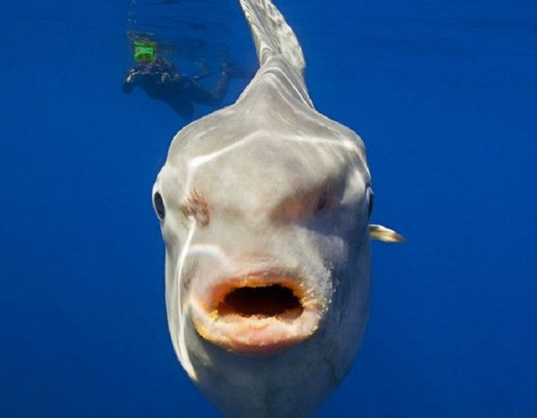

|  |
El pez luna (Mola mola) es un pez pelágico tetraodontiforme de la familia Molidae. Es el pez óseo más pesado del mundo, con una media de 1000 kg de peso y con ejemplares que alcanzan más de tres metros de longitud y superan las dos toneladas.2 Es una especie cosmopolita que habita en aguas tropicales y templadas a lo largo de todo el planeta. Tiene el cuerpo aplastado lateralmente y cuando extiende sus aletas dorsales y ventrales, el pez es tan largo como alto.
Se alimenta principalmente de varios tipos de zooplancton gelatinoso como las medusas, de las que consume grandes cantidades para poder desarrollarse y mantener su gran tamaño, puesto que es una dieta pobre en nutrientes. Las hembras de esta especie pueden producir hasta 300 millones de huevos, más que cualquier otro vertebrado conocido.3 Los alevines del pez luna parecen pequeños peces globo con grandes aletas pectorales, una aleta caudal y espinas corporales que no tienen los ejemplares adultos.
Los ejemplares adultos son vulnerables a pocos depredadores naturales, pero es presa de leones marinos, orcas y tiburones. Entre los humanos, su carne está considerada como una exquisitez en algunas partes del mundo, como Japón, Corea y Taiwán,4 pero la venta de su carne está prohibida en la Unión Europea.5 A menudo estos peces quedan accidentalmente atrapados en redes de pesca y también pueden dañarse o morir debido a encuentros con desechos flotantes, como bolsas de plástico.
El pez luna es miembro del orden de los Tetraodontiformes, que también incluye a los peces globo, los peces erizo y las lijas, por lo que comparte muchos de los rasgos comunes a los miembros de este orden. Originalmente fue descrito como Tetraodon mola, dentro del género de los peces globo Tetraodon, pero posteriormente fueron clasificados dentro de su propio género, Mola, que incluye dos especies; M. mola es la especie tipo de este género. |